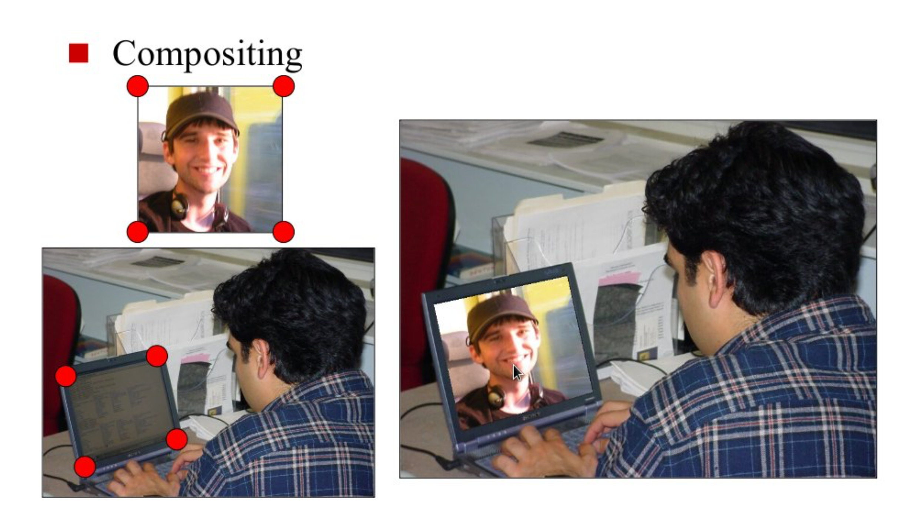

Quiz 4: Homography
Deadline: October 25, 2016, at 6pm
Instructions:
- Write a program in matlab to calculate a homography matrix from (given) 4
pairs of pixel correspondences of two images. You must use SVD to
solve the problem.
- Based on the predicted homography matrix, write a matlab
program to project one image to another image like shown below:

Figure 1. Left: Input images. Right: Expected output.
Submission:
- Matlab code,
- Images you used,
- Submit them by the deadline through IVLE.